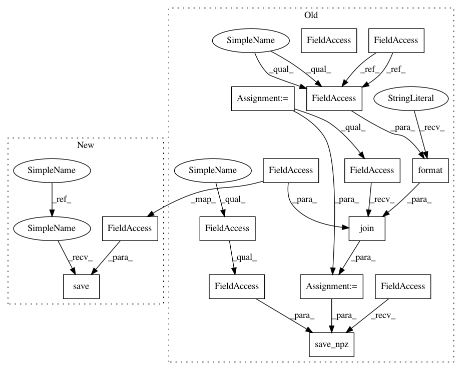

35b2c4917344f338eda67c78673cf4064b3b4265,examples/reinforcement_learning/tutorial_C51.py,DQN,train,#DQN#Any#Any#Any#Any#Any#,234
Before Change
self._train_func(b_o, b_index, b_m)
self.niter += 1
if self.niter % target_q_update_freq == 0:
sync(self.qnet, self.targetqnet)
path = os.path.join(args.save_path, "{}.npz".format(self.niter))
tl.files.save_npz(self.qnet.trainable_weights, name=path)
@tf.function
def _train_func(self, b_o, b_index, b_m):
with tf.GradientTape() as tape:
After Change
def _qvalues_func(self, obv):
return self.qnet(obv)
def train(self, b_o, b_a, b_r, b_o_, b_d):
// TODO: move q_estimation in tf.function
b_dist_ = np.exp(self.targetqnet(b_o_).numpy())
b_a_ = (b_dist_ * vrange).sum(-1).argmax(1)
b_tzj = np.clip(reward_gamma * (1 - b_d[:, None]) * vrange[None, :] + b_r[:, None], min_value, max_value)
b_i = (b_tzj - min_value) / deltaz
b_l = np.floor(b_i).astype("int64")
b_u = np.ceil(b_i).astype("int64")
templ = b_dist_[range(batch_size), b_a_, :] * (b_u - b_i)
tempu = b_dist_[range(batch_size), b_a_, :] * (b_i - b_l)
b_m = np.zeros((batch_size, atom_num))
// TODO: aggregate value by index and batch update (scatter_add)
for j in range(batch_size):
for k in range(atom_num):
b_m[j][b_l[j][k]] += templ[j][k]
b_m[j][b_u[j][k]] += tempu[j][k]
b_m = tf.convert_to_tensor(b_m, dtype="float32")
b_index = np.stack([range(batch_size), b_a], 1)
b_index = tf.convert_to_tensor(b_index, "int64")
self._train_func(b_o, b_index, b_m)
self.niter += 1
if self.niter % target_q_update_freq == 0:
sync(self.qnet, self.targetqnet)
self.save(args.save_path)
def save(self, path):
if path is None:
In pattern: SUPERPATTERN
Frequency: 3
Non-data size: 15
Instances
Project Name: tensorlayer/tensorlayer
Commit Name: 35b2c4917344f338eda67c78673cf4064b3b4265
Time: 2020-02-07
Author: 34995488+Tokarev-TT-33@users.noreply.github.com
File Name: examples/reinforcement_learning/tutorial_C51.py
Class Name: DQN
Method Name: train
Project Name: tensorlayer/tensorlayer
Commit Name: 35b2c4917344f338eda67c78673cf4064b3b4265
Time: 2020-02-07
Author: 34995488+Tokarev-TT-33@users.noreply.github.com
File Name: examples/reinforcement_learning/tutorial_DQN_variants.py
Class Name: DQN
Method Name: train
Project Name: tensorlayer/tensorlayer
Commit Name: bb857bb2469689da4d2e19473049e47ccc1be04a
Time: 2020-02-07
Author: 34995488+Tokarev-TT-33@users.noreply.github.com
File Name: examples/reinforcement_learning/tutorial_prioritized_replay.py
Class Name: DQN
Method Name: train